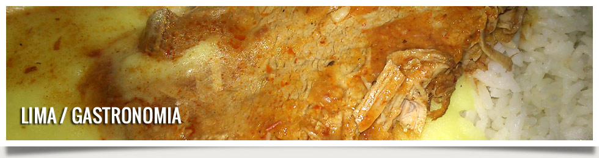
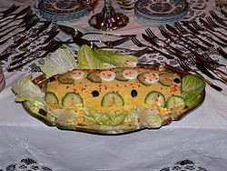

|  | |||||
| Inicio | Gastronomia | Restaurantes | Discotecas | Museos | Iglesias |
Causa a la limeñaLa cocina limeña ha sido producto de la fusión de la tradición culinaria del antiguo Perú con la cocina española en su variante más fuertemente influenciada por la presencia morisca en la Península Ibérica y con importantes aportes de las costumbres culinarias traídas de la costa atlántica del África Subsahariana por los esclavos. Posteriormente, este mestizaje se vio influenciado por los usos y costumbres culinarias de los chefs franceses que huyeron de la revolución en su país para radicarse, en buen número, en la capital del Virreinato del Perú. Igualmente trascendental fue la influencia de las inmigraciones del siglo XIX, que incluyó chinos cantoneses, japoneses e italianos,183 entre otros orígenes principalmente europeos, además de un fuerte flujo interno desde las zonas rurales a las ciudades, en particular, a Lima en la segunda mitad del siglo XX La ciudad cuenta además con una amplia variedad de restaurantes de comida criolla, chifas, cebicherías y pollerías. La cocina peruana, ampliamente representada en Lima, tiene varios Récords Guinness por su diversidad y su calidad. En 2006, durante el evento anual de Madrid Fusión la ciudad fue declarada como la Capital Gastronómica de Latinoamérica.
|
 |
||||
ChifasLos Chifas son muy populares en el Perú, en Lima se encuentran en todos los barrios, en los Chifas se ofrecen ricos platillos, productos de la fusión de la comida peruana y china. El arroz chaufa es el plato por excelencia. La fusión de la comida peruana –china empieza desde que se inicia la gran migración china al Perú en 1921, la población china se concentro en algunos barrios populares en Lima como la Calle Capón, donde nacieron los primeros chifas. El chifa pasó a ser el lugar donde todos podamos encontrar comida sabrosa, calientita y barata. Ganas de suspirar: El Suspiro de limeñaUno de los postres más representativos de Lima es el suspiro de limeña, una verdadera orgía azucarada capaz de levantarle el ánimo al mismo Lázaro sin intervención divina. Su origen se remonta al siglo XIX y tiene una fuerte influencia mora. Se prepara a base de leches condensada y evaporada, azúcar, huevos, un chorro de Oporto, vainilla y canela en polvo y posee la consistencia de un manjar blanco, coronado por claras batidas espolvoreadas con canela. Mazamorra MoradaEste es sin duda el postre típico de la ciudad de los reyes y el recuerdo más tierno de la infancia de miles de limeños. Se elabora con maíz morado, azúcar, harina de camote, trozos de canela, clavos de olor, piña, y jugo de limón. A esta compota espesa se le añaden todo tipo de "tropezones" como manzana, membrillo, melocotones, guindas, guindones, huesillos y se espolvorea con canela en polvo. Deliciosa y nutritiva como pocas, la mazamorra morada no necesita de tanto texto, se defiende solita. Milagro de octubreDoña Pepa, devota del Señor de los Milagros fue la creadora del Turrón de Doña Pepa, otro de los postres emblemáticos de Lima. Cuenta la leyenda que doña Josefa Marmanillo elaboró el primer turrón en agradecimiento a un milagro concedido por el Cristo Moreno. Miel colonialEl arribo de españoles, moros y africanos durante la Colonia creó una fusión de técnicas e insumos que las reposteras supieron aprovechar en beneficio de los dulceros. Ahí están el ranfañote y el bienmesabe, el budín de camote y las ponderaciones, los imbatibles picarones con miel de chancaca y el champús de frutas. Muchos de estos postres casi han desaparecido de las mesas familiares y algunos han sido rescatados del olvido por los restaurantes criollos modernos o por una que otra dulcería de barrio. En Lima, el malecón Chabuca Granda, a orillas del río Rímac, es un excelente lugar para degustar estos postres de antaño. Principales platos tipicos que puede saborear en Lima son:
Sus postres típicos son:
La bebida tradicional es la chicha morada, hecha del maiz morado. |
|||||